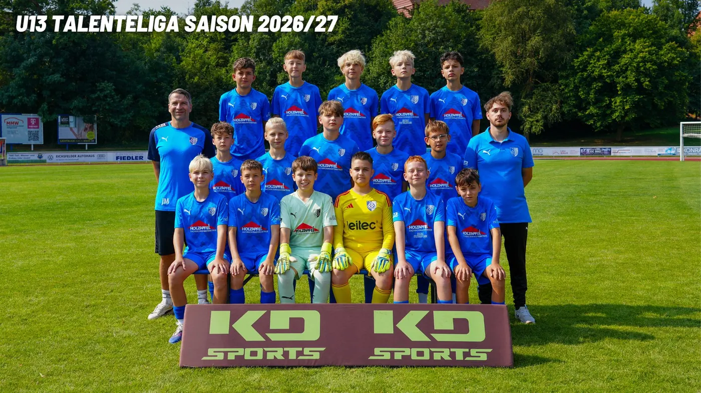

SC Heiligenstadt U13 – Der Kader 2026/27

Nächste Spiele
- 10:30Sa, 10.10.Verbandsliga1. SC 1911 Heiligenstadt:JFC Gera IIHeimspielZum Spiel 1. SC 1911 Heiligenstadt gegen JFC Gera II
- 10:30Sa, 24.10.Thüringen-PokalSC Nottertal Heilinger Höhen:1. SC 1911 HeiligenstadtAuswärtsZum Spiel SC Nottertal Heilinger Höhen gegen 1. SC 1911 Heiligenstadt
- 10:30Sa, 07.11.Verbandsliga1. SC 1911 Heiligenstadt:FC Rot-Weiß Erfurt U12HeimspielZum Spiel 1. SC 1911 Heiligenstadt gegen FC Rot-Weiß Erfurt U12
- 09:00Sa, 14.11.Verbandsliga1. FC Eichsfeld:1. SC 1911 HeiligenstadtAuswärtsZum Spiel 1. FC Eichsfeld gegen 1. SC 1911 Heiligenstadt
- 10:30Sa, 28.11.Verbandsliga1. SC 1911 Heiligenstadt:JFC GeraHeimspielZum Spiel 1. SC 1911 Heiligenstadt gegen JFC Gera
- 10:30Sa, 05.12.VerbandsligaFC Saalfeld:1. SC 1911 HeiligenstadtAuswärtsZum Spiel FC Saalfeld gegen 1. SC 1911 Heiligenstadt
- 10:30Sa, 12.12.Verbandsliga1. SC 1911 Heiligenstadt:FC Carl Zeiss Jena U12HeimspielZum Spiel 1. SC 1911 Heiligenstadt gegen FC Carl Zeiss Jena U12
- 10:30Sa, 06.03.Verbandsliga1. SC 1911 Heiligenstadt:SV SCHOTT JenaHeimspielZum Spiel 1. SC 1911 Heiligenstadt gegen SV SCHOTT Jena
Tabelle und Kader auf fussball.deAlle Termine
Quelle: www.sc1911-heiligenstadt.de · Stand 06.10.2026